Equation / Formula Candidate Index
OCR math can be noisy. The linked page images are the visual source of truth.
Candidate 1 - page 002
{kind=link}
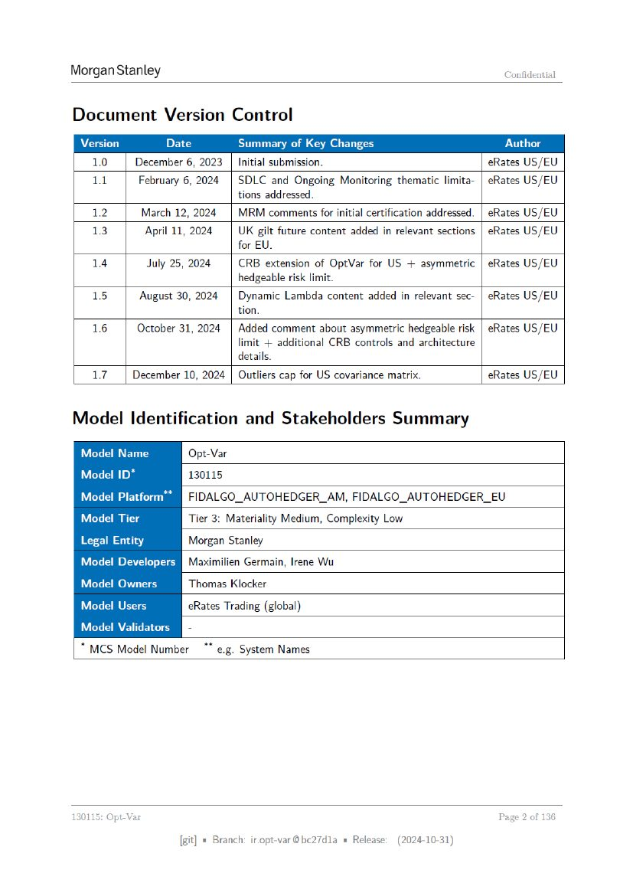
15 August 30, 2024 Dynamic Lambda content added in relevant sec- | eRates US/EUCandidate 2 - page 002
item setistuben| FIDALGO_AUTOHEDGER_AM, FIDALGO_AUTOHEDGER_EUCandidate 3 - page 003
{kind=link}
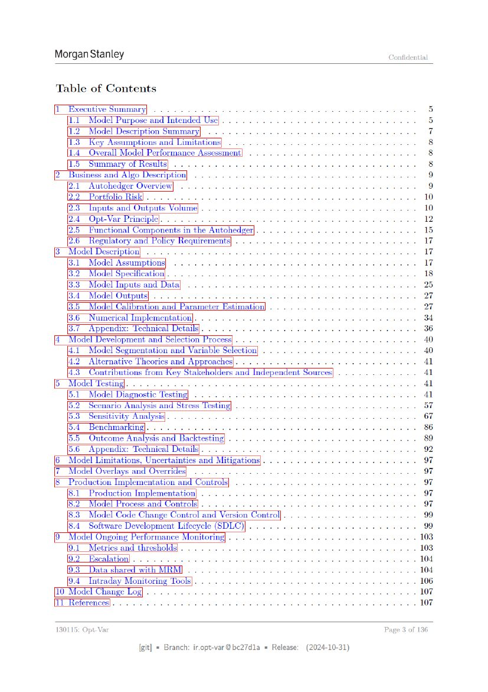
[I-1__Model Purpose and Intended Use]. . . 5Candidate 4 - page 003
[.2__ Model Description Summary] 7Candidate 5 - page 003
[L.3_Key Assumptions and Limitations] 8Candidate 6 - page 003
[2.3__Inputs and Outputs Volume| 10Candidate 7 - page 003
—_ 17Candidate 8 - page 003
(5.3_SensitivityCandidate 9 - page 003
[5.5__ Outcome Analysis and Backtesting] . 89Candidate 10 - page 003
[5.6_Appendix: Technical Details]... . 92Candidate 11 - page 003
[6_ Model Limitations, Uncertainties and Mitigations| 97Candidate 12 - page 003
[7_Model Overlays and Overrides] 97Candidate 13 - page 010
{kind=link}
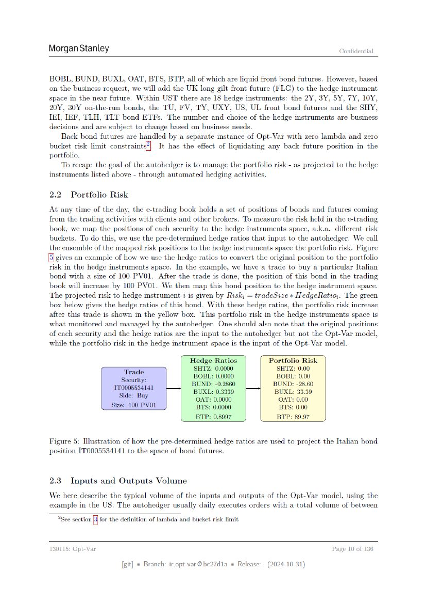
Back bond futures are handled by a separate instance of Opt-Var with zero lambda and zeroCandidate 14 - page 010
The projected risk to hedge instrument i is given by Risk; = tradeSize * HedgeRatio;. The greenCandidate 15 - page 010
See section [3] for the definition of lambda and bucket risk limitCandidate 16 - page 012
{kind=link}
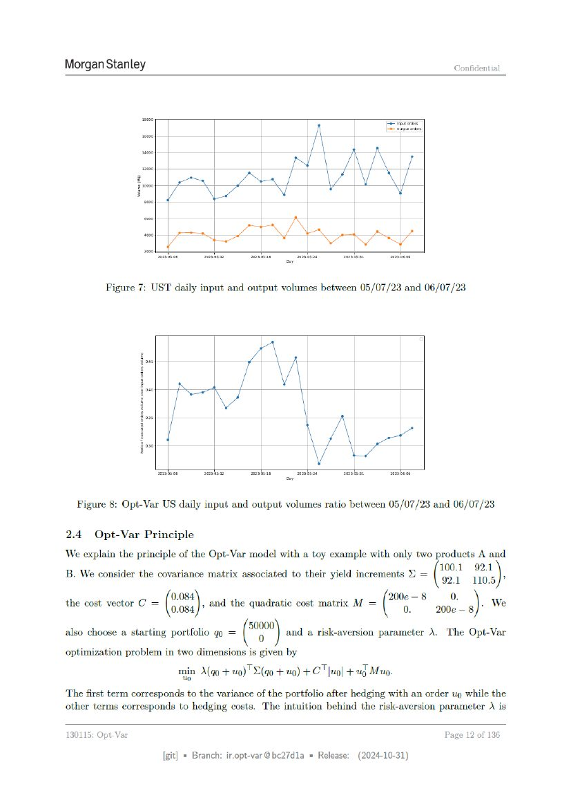
B. We consider the covariance matrix associated to their yield increments U = (2 1 110.5Candidate 17 - page 012
0.084‘): and the quadratic. cost matrix. M = ( 200e-8Candidate 18 - page 012
the cost vector C = (v0 0 0. .): WeCandidate 19 - page 012
. portfolio. qo =Candidate 20 - page 012
("5") . . parameter \. The Opt-VarCandidate 21 - page 012
min A(go + uo)" (qo + wo) + CT luo] + ug Muo.Candidate 22 - page 012
The first term corresponds to the variance of the portfolio after hedging with an order uo while theCandidate 23 - page 013
{kind=link}
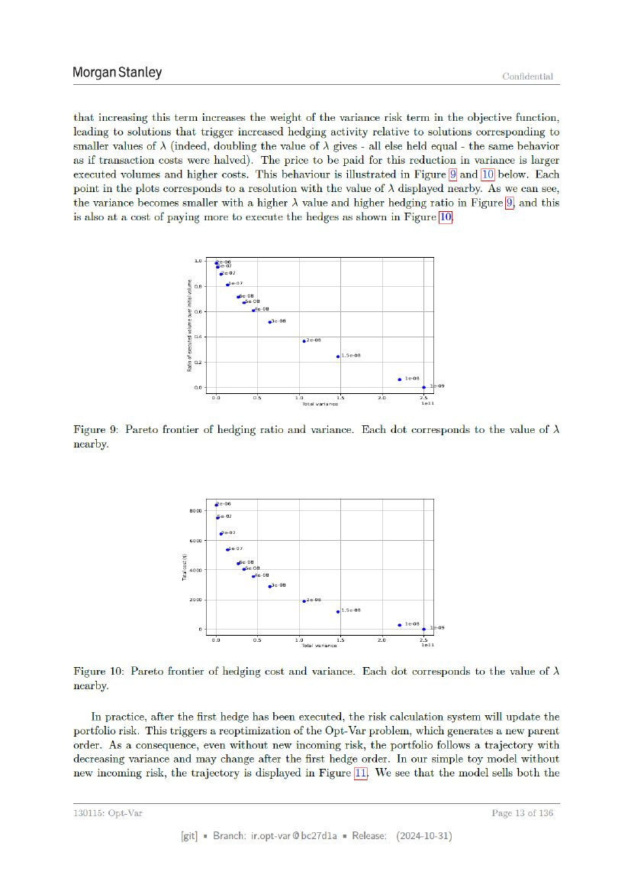
point in the plots corresponds to a resolution with the value of \ displayed nearby. As we can see,Candidate 24 - page 013
the variance becomes smaller with a higher \ value and higher hedging ratio in Figure|| and thisCandidate 25 - page 013
Figure 9: Pareto frontier of hedging ratio and variance. Each dot corresponds to the value of \Candidate 26 - page 014
{kind=link}
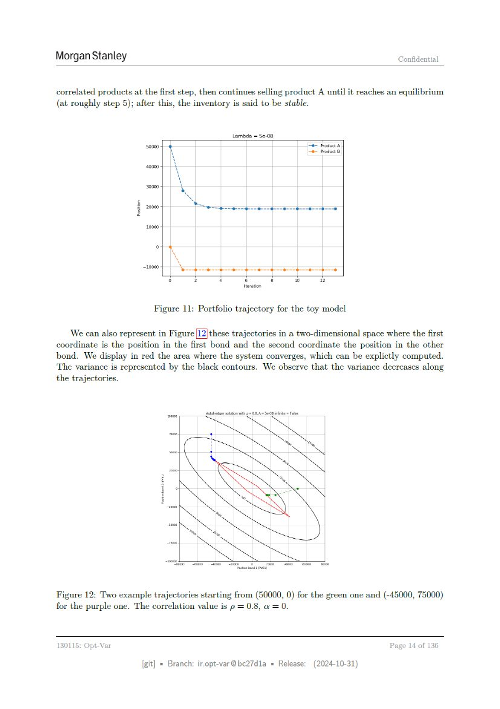
Lambda = 5e-08Candidate 27 - page 014
_ _ntohedgeseluton wh 2=08.A~ S608 infnts = FalseCandidate 28 - page 016
{kind=link}
Performs portfolio hedging and suggests hedging trades to ensure: \Candidate 29 - page 019
{kind=link}
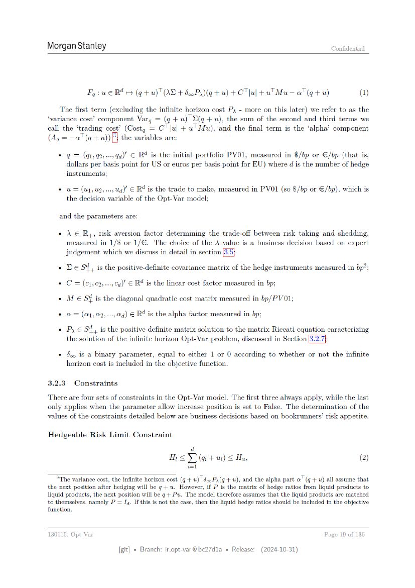
Fy: we Ros (q+u) (AD 4+ bcPy)(qt+u) +C" |u| t+ulMu—al(q+u) (1)Candidate 30 - page 019
‘variance cost’ component Varg = (q + u)'5(q + u), the sum of the second and third terms weCandidate 31 - page 019
call the ‘trading cost’ (Costy = C'|u| + u'Mu), and the final term is the ‘alpha’ componentCandidate 32 - page 019
(q +u)) P| the variables are:Candidate 33 - page 019
+ \ € R,, risk aversion factor determining the trade-off between risk taking and shedding,Candidate 34 - page 019
measured in 1/$ or 1/€. The choice of the \ value is a business decision based on expertCandidate 35 - page 019
« C= (ct,c9,...,¢4)' € R¢ is the linear cost factor measured in bp;Candidate 36 - page 019
+ P\ € S14, is the positive definite matrix solution to the matrix Riccati equation caracterizingCandidate 37 - page 019
*The variance cost, the infinite horizon cost (q+ u)"da.P(q+ u), and the alpha part a” (q + u) all assume thatCandidate 38 - page 019
the next position after hedging will be q + u. However, if P is the matrix of hedge ratios from liquid products toCandidate 39 - page 020
{kind=link}
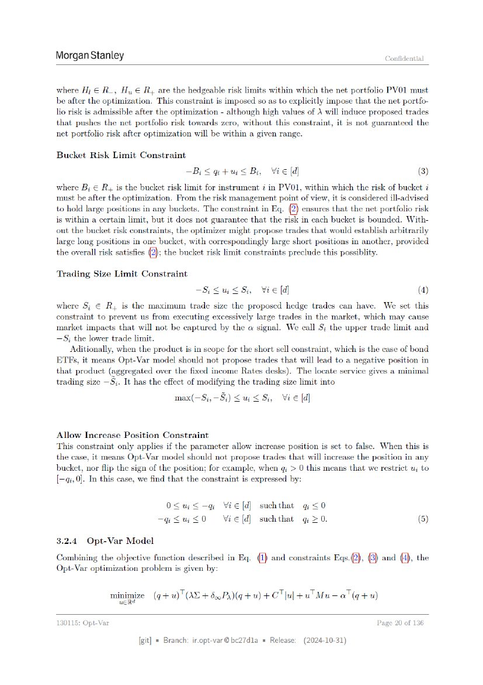
where H, € R_, Hy, € R,, are the hedgeable risk limits within which the net portfolio PVO1 mustCandidate 40 - page 020
lio risk is admissible after the optimization - although high values of \ will induce proposed tradesCandidate 41 - page 020
minimize (q+ u) (N+ bx0Py(q+u)+C"\ul+ulMu—al(q+u)Candidate 42 - page 021
{kind=link}
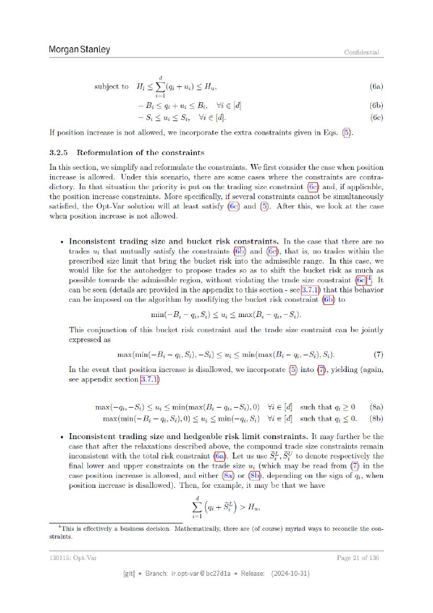
subject to Hy < S°(qi t+ ui) < Hu, (6a)Candidate 43 - page 021
min(—B; — q;,5;) < uj < max(B; — gq, —S;).Candidate 44 - page 021
max(min(—B;— qi, $;),—Si) < ui < min(max(B; — qi, —5;),Si). (7)Candidate 45 - page 021
max(—qi,—S:) < ui < min(max(B; — qi,—S;),0) Vi [d] such that gq >0 (8a)Candidate 46 - page 021
max(min(—B; — q;,5;),0) <u; < min(—g;,S,;) Vie [d) such that g, <0. (8b)Candidate 47 - page 022
{kind=link}
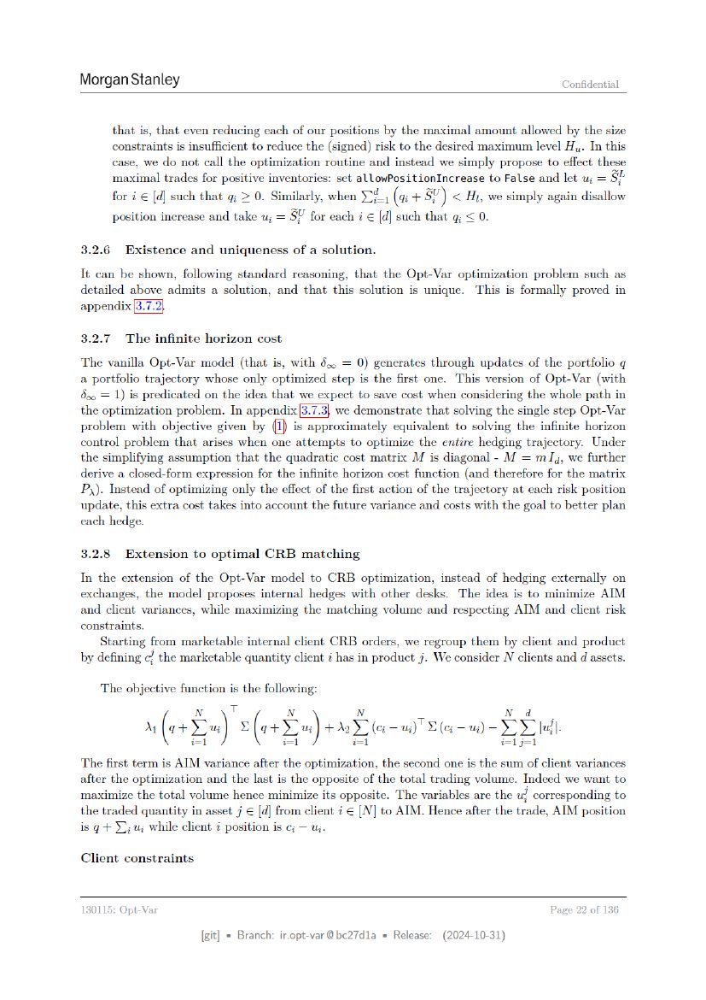
the simplifying assumption that the quadratic cost matrix M is diagonal - M = mq, we furtherCandidate 48 - page 022
n \t N N NdCandidate 49 - page 023
{kind=link}
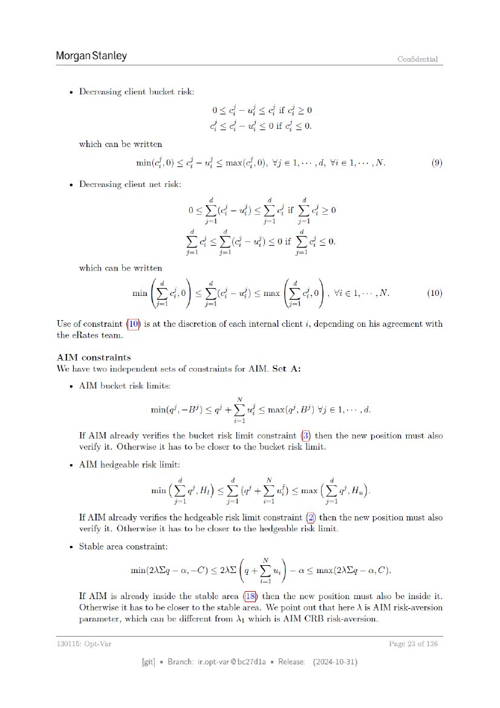
min(c},0)Candidate 50 - page 023
min |S c},0] < S°(c} —u}) <max | $>cj,0]}, Viel,,N. (10)Candidate 51 - page 023
min(q,—B?)Candidate 52 - page 023
min (0jel q/,Hi) <Dj=l (a + i=1Dom) < max (0j=l a, Hu).Candidate 53 - page 023
min(2\Dq—a,—-C) < 24D (: +e «) —a< max(2\Nq—a,C).Candidate 54 - page 023
Otherwise it has to be closer to the stable area. We point out that here \ is AIM risk-aversionCandidate 55 - page 024
{kind=link}
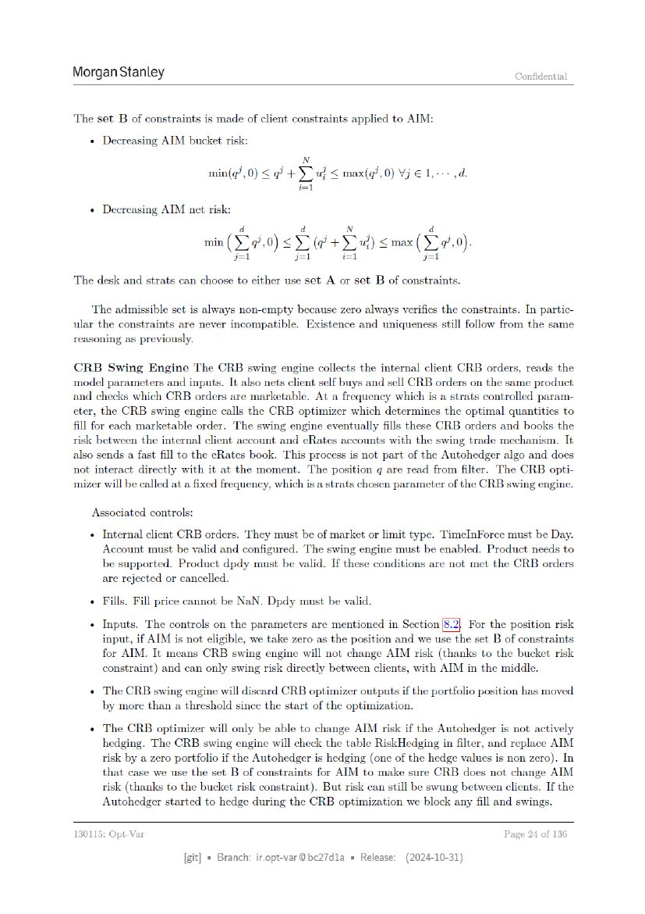
min(q’,0)Candidate 56 - page 024
min (0,0) <y@+h™) <max (P90).Candidate 57 - page 025
{kind=link}
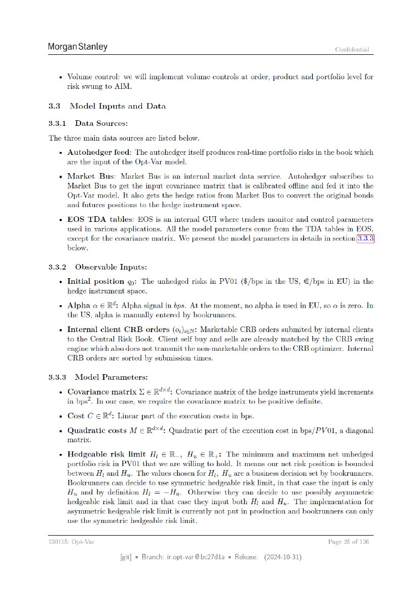
« Initial position qo: The unhedged risks in PVO1 ($/bps in the US, €/bps in EU) in theCandidate 58 - page 025
+ Hedgeable risk limit H; € R_, H, € Ry: The minimum and maximum net unhedgedCandidate 59 - page 026

+ Risk-aversion factor A: The risk aversion factor \ in the objective function (I), measuredCandidate 60 - page 026
values of \ correspond to smaller terminal portfolios.Candidate 61 - page 026
1. Constant A: When this type is chosen, the \ value is fixed and will not change with-Candidate 62 - page 026
The idea of dynamic A is to decrease the \ value when we receive a flow trade (via B2C,Candidate 63 - page 027
{kind=link}
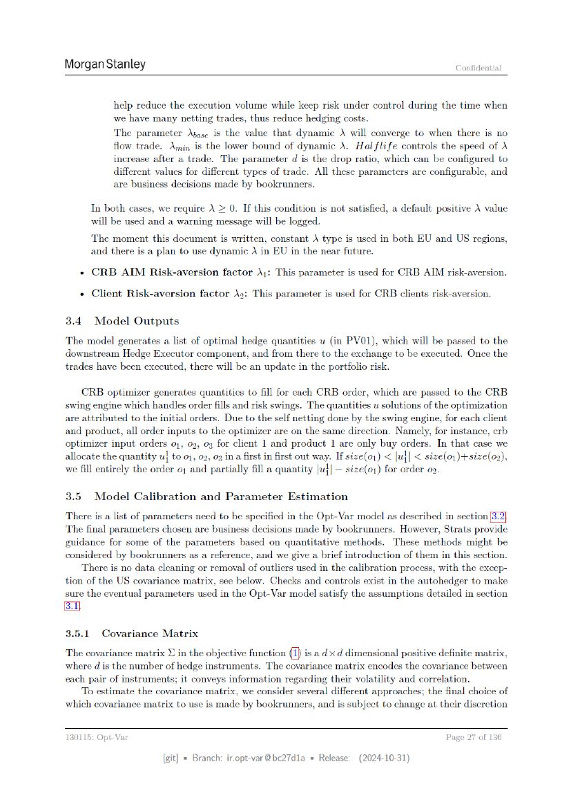
The parameter Ayase is the value that dynamic \ will converge to when there is noCandidate 64 - page 027
flow trade. Amin is the lower bound of dynamic \. Hal flife controls the speed ofCandidate 65 - page 027
In both cases, we require \ > 0. If this condition is not satisfied, a default positive \ valueCandidate 66 - page 027
and there is a plan to use dynamic \ in EU in the near future.Candidate 67 - page 027
« CRB AIM Risk-aversion factor \;: This parameter is used for CRB AIM risk-aversion.Candidate 68 - page 027
« Client Risk-aversion factor \2: This parameter is used for CRB clients risk-aversion.Candidate 69 - page 027
allocate the quantity w} to 01, 02, 03 ina first in first out way. If size(o1) < |u}| < size(o1)+size(o2),Candidate 70 - page 027
we fill entirely the order 0; and partially fill a quantity |u{|— size(o,) for order 09.Candidate 71 - page 028
{kind=link}
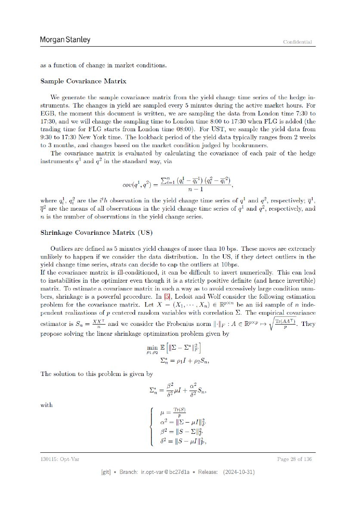
min E [liz =i [2|Candidate 72 - page 028
a==|b- ul\|pCandidate 73 - page 029
{kind=link}
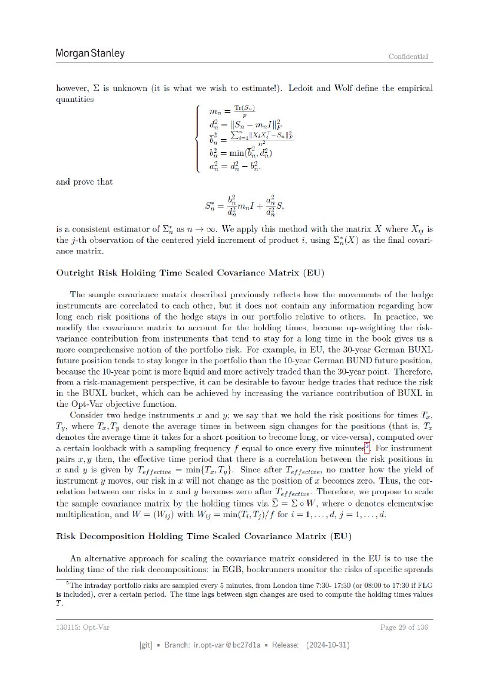
my _= Tr(SpCandidate 74 - page 029
p22 _ VR AIX T—Snll®Candidate 75 - page 029
bj = min(b,, dy)Candidate 76 - page 029
x and y is given by Teffective = min{T;,Ty}. Since after Tey;ective, no matter how the yield ofCandidate 77 - page 029
multiplication, and W = (Wj) with Wi = min(Tj,T,)/f for i=1,...,d, 7 =1,...,d.Candidate 78 - page 031
{kind=link}
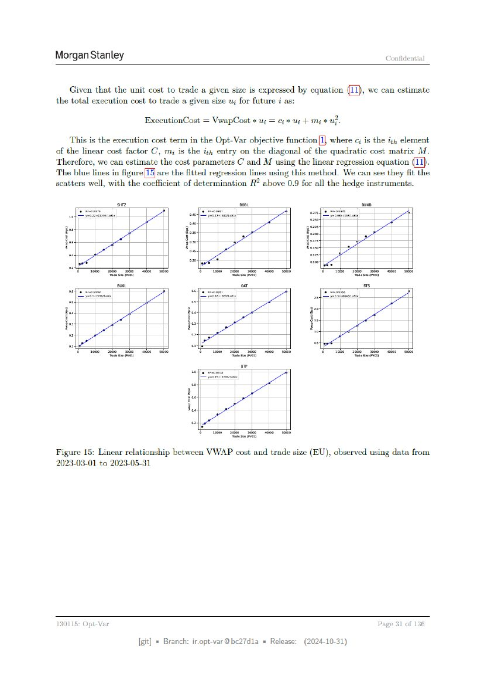
ExecutionCost = VwapCost + uj = ci * ui + mi * uP.Candidate 79 - page 032
{kind=link}
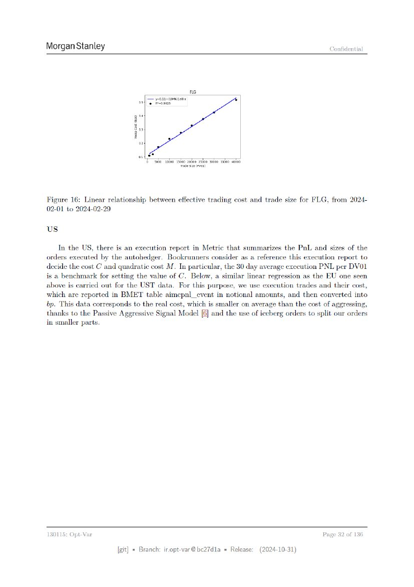
which are reported in BMET table aimcpnl_event in notional amounts, and then converted intoCandidate 80 - page 034
{kind=link}
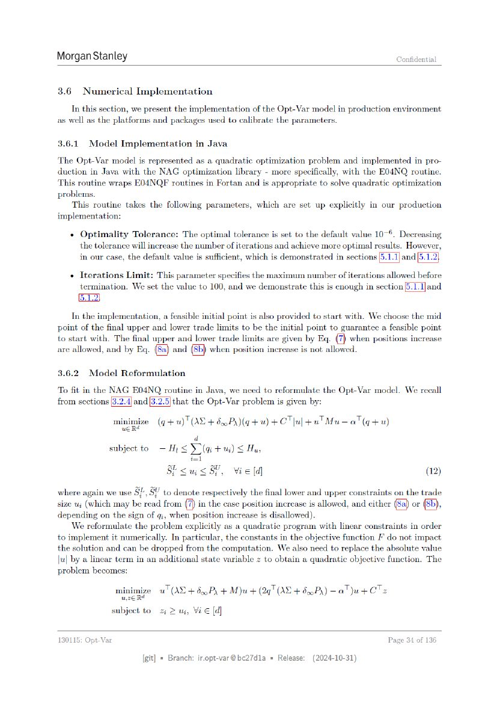
minimize (q+ u)'(AD + b0Pa)(qt+ u) +C" ful +u'Mu-al(q+u)Candidate 81 - page 034
subject to — Hy < S0(qi+ui) < Hu,Candidate 82 - page 034
|u| by a linear term in an additional state variable z to obtain a quadratic objective function. TheCandidate 83 - page 034
minimize ul (AD + bx0P\ + M)ut (2q' (AD + 60P,) — a )ut+ClzCandidate 84 - page 035
{kind=link}
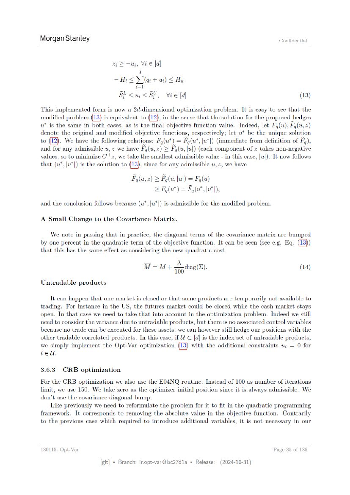
—Wh< a+ u) < HyCandidate 85 - page 035
to (12). We have the following relations: Fy(u*) = F,(u*, |u*|) (immediate from definition of F;),Candidate 86 - page 035
and te any admissible u,z we have F,(u,z) > F,(u, |u|) (each component of z takes non-negativeCandidate 87 - page 035
values, so to minimize C7, we take the smallest admissible value - in this case, |u). It now followsCandidate 88 - page 035
that (u*,|u*|) is the solution to (13), since for any admissible u, 2, we haveCandidate 89 - page 035
and the conclusion follows because (u*,|u*|) is admissible for the modified problem.Candidate 90 - page 035
M=M+ Foo tias(®)- (14)Candidate 91 - page 036
{kind=link}
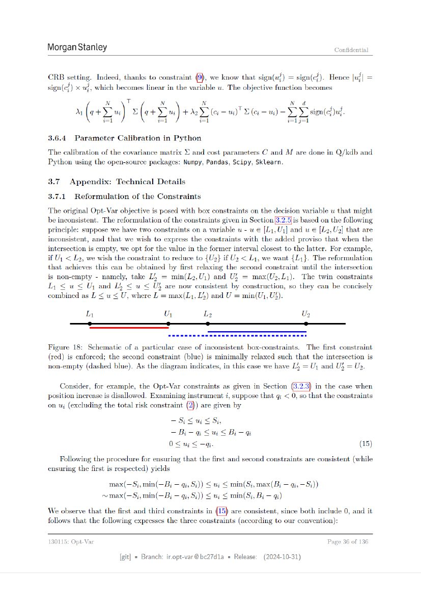
CRB setting. Indeed, thanks to constraint (9), we know that sign(w}) = sign(c}). Hence |u}| =Candidate 92 - page 036
is non-empty - namely, take L, = min(L9,U;) and Ul = max(U9,L1). The twin constraintsCandidate 93 - page 036
combined as L < u <U, where L = max(L1,L4) and U = min(U;, U3).Candidate 94 - page 036
max(—Sj, min(—B; — qi, S;)) < uj < min(S;, max(B; — qi, —S;))Candidate 95 - page 036
~max(—S;,min(—B; — qi, S;)) < ui < min(S;,Bi — gi)Candidate 96 - page 037
{kind=link}
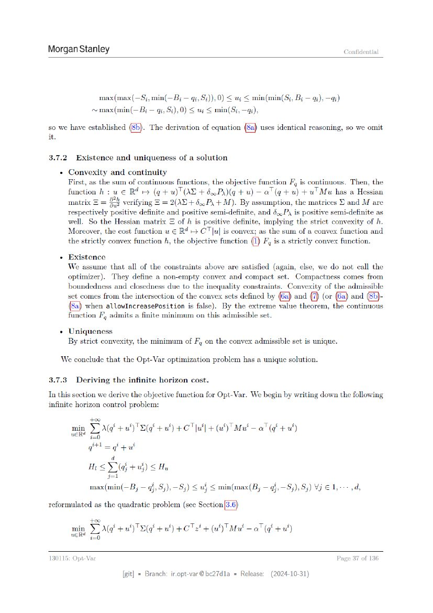
max(max(—S;,min(—B; — qi, Si)),0) < ui < min(min(5;, Bi — qi), —43)Candidate 97 - page 037
~max(min(—B; — qi, 5;),0) < ui < min(S;, —gi),Candidate 98 - page 037
function h : u € R4 +s (qt+u)' (AL + doc Pa)(q+u) — a! (q+) +u! Mu has a HessianCandidate 99 - page 037
Moreover, the cost function u € R4++ CT |u| is conve: ;.as the sum of a convex function andCandidate 100 - page 037
min, SAG +) Dg 4°) +O u'| $ (uw) Mul — a (gi +u')Candidate 101 - page 037
max(min(—B, — g5,.5;),—Sj) <u; < min(max(B; — g;,—Sj),55) ¥j €1,--+ 4d,Candidate 102 - page 037
min Sq +u') Ng tu’) +C le! + (u')' Mui -a'(g +u')Candidate 103 - page 038
{kind=link}
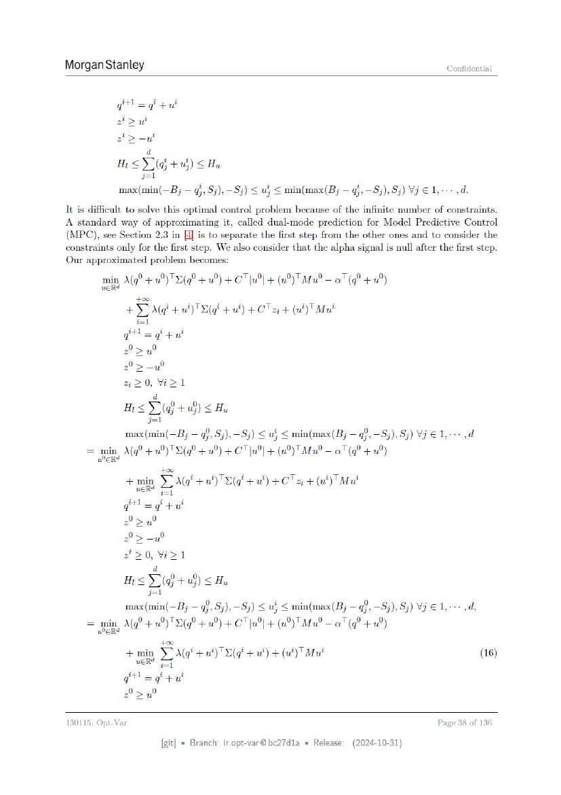
M< SG +uj) < HuCandidate 104 - page 038
max(min(—B, — qj,.5;),—Sj) < uj < min(max(B; — q},—S;),S;) Vj €1,---.d.Candidate 105 - page 038
min Aq? +.u®) TE(q? + u?) + CT fu] + (u®) Mu? — al (go +09)Candidate 106 - page 038
+O AG +u)TEG +u') + Cla + (u')' MulCandidate 107 - page 038
Ms oq} + uf) < HuCandidate 108 - page 038
max(min(—B; — q), $;),—S;) < ui, < min(max(B; — q),—S;), $;) ¥j €1,--+ .dCandidate 109 - page 038
= pin, Ma? + uP) D(a? + u) CT ad] + (wl) Ma? — a! (g? + 0°)Candidate 110 - page 038
+ min, > Agi tui) (qi tu) + CT + (ui) MutCandidate 111 - page 038
M< Yq} +uj) < HuCandidate 112 - page 038
max(min(—B, — 4}, $;),—S;) < uj < min(max(B; — q?, —5;), $5) ¥j €1,--+.d,Candidate 113 - page 039
{kind=link}
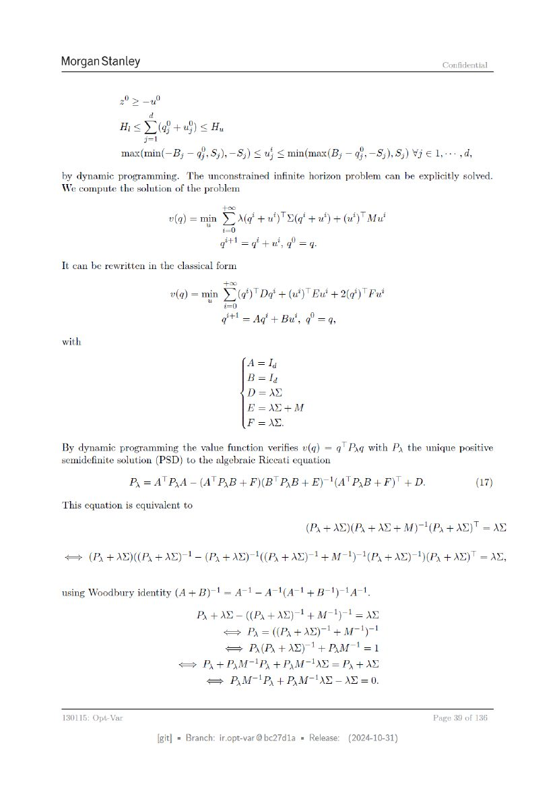
M< Yq} +uj) < HuCandidate 114 - page 039
max(min(—B; ~ qj, $3), —S;) < wy < min(max(B;— q},—S;), $3) Vj €1,---.d,Candidate 115 - page 039
ol) = min So Ng + ug + ut) + (wt) MetCandidate 116 - page 039
E=\S+MCandidate 117 - page 039
using Woodbury identity (A+ B)-!= A-!—A-!(A-1 4 Bo!) tat.Candidate 118 - page 039
<> P+ PMP +P\MOAD = Py HADCandidate 119 - page 039
<= PM 'P\+P\M1AD-AD=0.Candidate 120 - page 040
{kind=link}
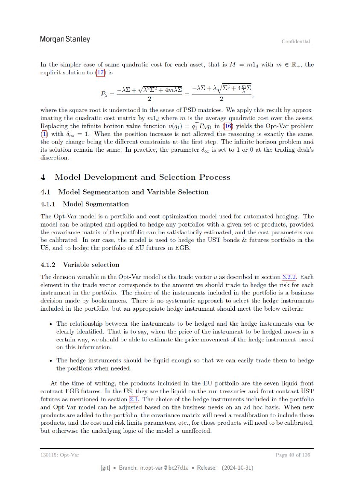
In the simpler case of same quadratic cost for each asset, that is M = mlq with m € R,, theCandidate 121 - page 040
+ IMAS _ AE + Ay/D2 44RDCandidate 122 - page 040
2 _ 2 °Candidate 123 - page 041
{kind=link}
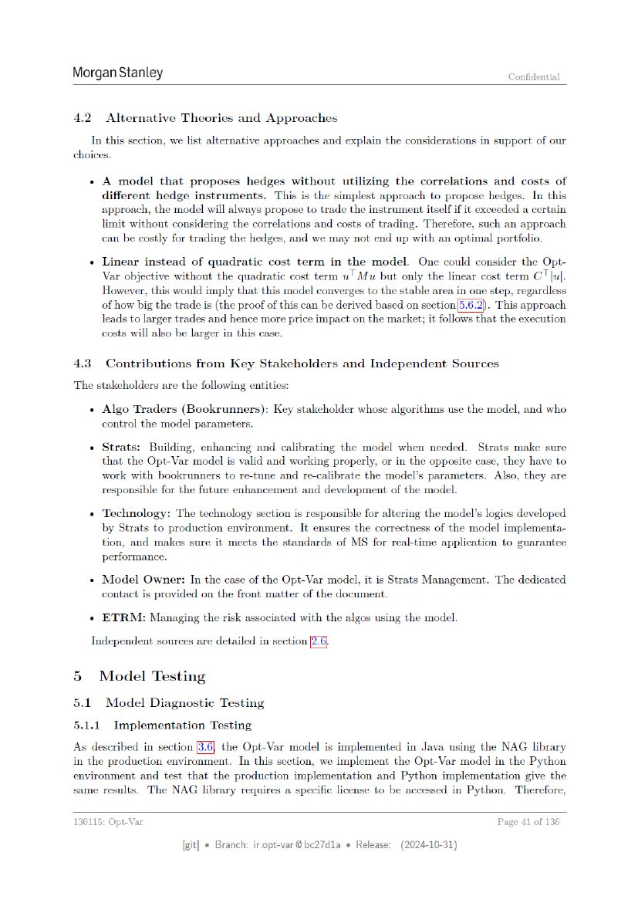
Var objective without the quadratic cost term u! Mu but only the linear cost term C™ |u|.Candidate 124 - page 044

SHTZ 0.00 (0.00%) [| _100 0Candidate 125 - page 044
BUXL 0.01 (0.00%) | _100 0Candidate 126 - page 044
BTS 0.00 (0.00%) [| _100 0Candidate 127 - page 045

AIM Risk Aversion Factor \ 8e-8Candidate 128 - page 045
CRB AIM Risk Aversion Factor \1_| 400e-8Candidate 129 - page 048

UXY client 1 [0.00 (0.00%) | _100 0Candidate 130 - page 048
US client 1 0.00 (0.00%) [| _100 0Candidate 131 - page 048
TY client 2 0.00 (0.00%) [| _100 0Candidate 132 - page 048
UXY client 2_ | 0.00 (0.00%) | _100 0Candidate 133 - page 048
US client 2 0.00 (0.00%) [| _100 0Candidate 134 - page 049

UXY client 1 [0.00 (0.00%) | _100 0Candidate 135 - page 049
US client 1 0.00 (0.00%) [| _100 0Candidate 136 - page 049
TY client 2 0.00 (0.00%) [| _100 0Candidate 137 - page 049
UXY client 2 __ | 0.00 (0.00%) | _100 0Candidate 138 - page 049
US client 2 0.00 (0.00%) [| _100 0Candidate 139 - page 054
{kind=link}
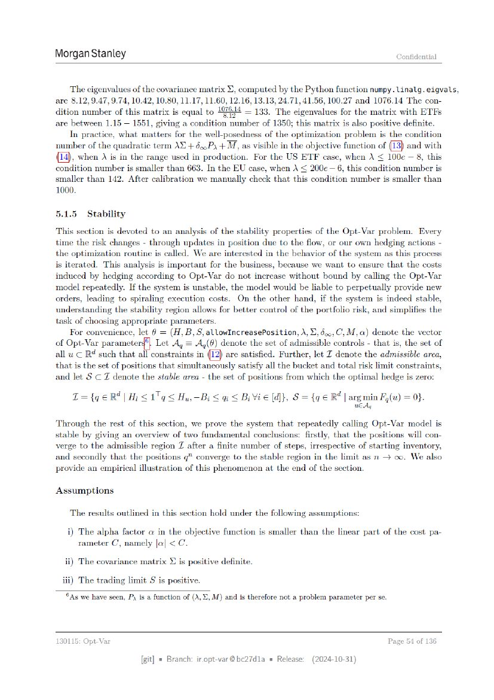
(4), when ) is in the range used in production. For the US ETF case, when \ < 100e — 8, thisCandidate 140 - page 054
condition number is smaller than 663. In the EU case, when \ < 200e— 6, this condition number isCandidate 141 - page 054
For convenience, let @ = (H,B, S,allowIncreasePosition, \, 5, d.0,C, M,a) denote the vectorCandidate 142 - page 055
{kind=link}
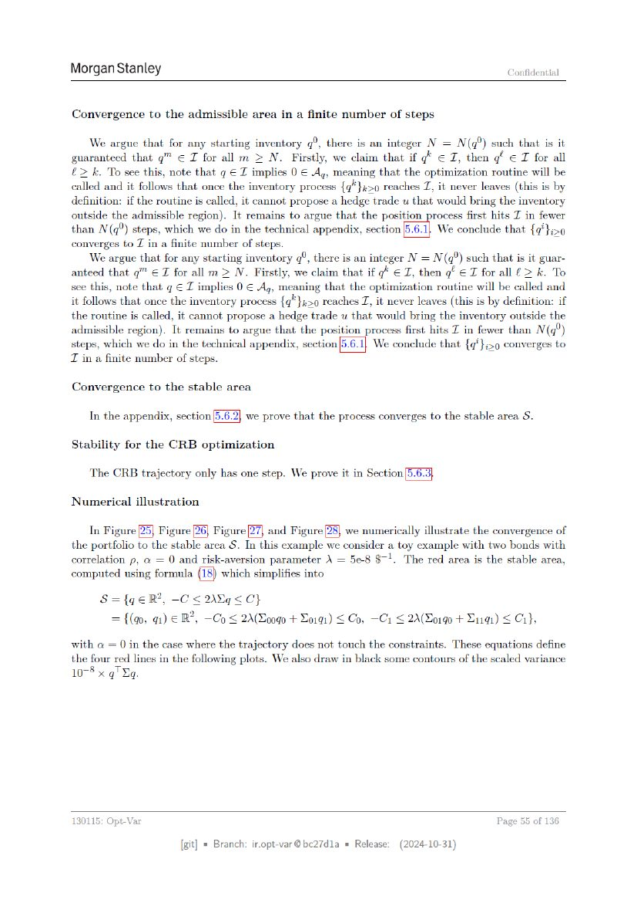
correlation p, a = 0 and risk-aversion parameter \ = 5e-8 $~!. The red area is the stable area,Candidate 143 - page 055
S={qeR?, -C<2\Nq<C}Candidate 144 - page 056
{kind=link}
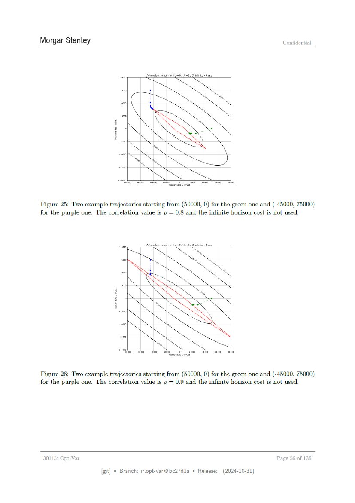
_ _ntohedgeseluton wh 2=08.A~ S608 infnts = FalseCandidate 145 - page 056
_ntoheoge selonCandidate 146 - page 057
{kind=link}
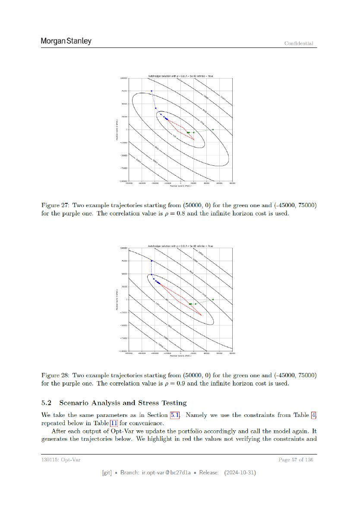
_ atanedoeslston mth 9~08,4~56.08 nt = TrCandidate 147 - page 058

report the total risk 24, q (column "PV01') the scaled variances \g," Eq; (column "Variance’)Candidate 148 - page 058
and the costs of the last trade CT u;_1| (column "Cost"). We take the covariance matrix given inCandidate 149 - page 058
Table 13 For CRB, the cost: is replaced by the total volume 5), ; |u/. Client risk are generatedCandidate 150 - page 058
AIM Risk Aversion Factor \ 8e-8Candidate 151 - page 059
{kind=link}
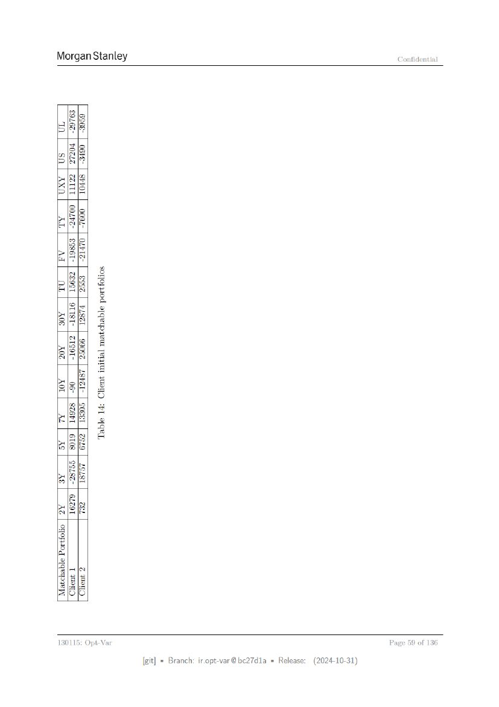
>|Z\z|Candidate 152 - page 063

2\Xq 0.22 -0.08 | -0.077 | -0.06 | -0.12 | -0.30 | 0.0078Candidate 153 - page 064

2\Nq 0.22 0.14 -0.07 -0.045 | -0.12 | -0.30 | -0.04Candidate 154 - page 064
repeated calls to Opt-Var for \ = 2e-58-1,Candidate 155 - page 064
repeated calls to Opt-Var for \ = 2e-5$-1.Candidate 156 - page 065

S\o[Zlole} <> SizCandidate 157 - page 065
=3 Z|S| _ 1%& .> ElCandidate 158 - page 065
Z\ZAIS|SIB) =aCandidate 159 - page 065
FISRIER) 3 S\ISISSis| S |Shopehe} S s aCandidate 160 - page 065
KSIZisl\s\S} = =&Candidate 161 - page 065
KIS s\sls| ==SsCandidate 162 - page 065
ERIBEIS] -(S\S|s|s)Candidate 163 - page 065
S Is \o iS gCandidate 164 - page 065
eiselele| = |S\BBIe| = I. S/S sie 8 | jsisigys}Candidate 165 - page 065
2% IEee |B\B\2\2)Candidate 166 - page 068

to not consider the infinite horizon cost. As mentioned in|3.3.3} the choice of \ has a direct effectCandidate 167 - page 068
on the stable area where the portfolio converges. The larger the value of \ the smaller the finalCandidate 168 - page 068
portfolio and variance, as confirmed by the Figures below. The total cost also increases with \Candidate 169 - page 069
{kind=link}
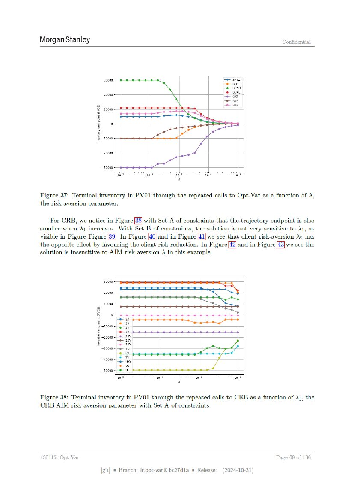
smaller when 1 increases. With Set B of constraints, the solution is not very sensitive to \1, asCandidate 170 - page 069
solution is insensitive to AIM risk-aversion \ in this example.Candidate 171 - page 069
Figure 38: Terminal inventory in PVO1 through the repeated calls to CRB as a function of \1, theCandidate 172 - page 070
{kind=link}
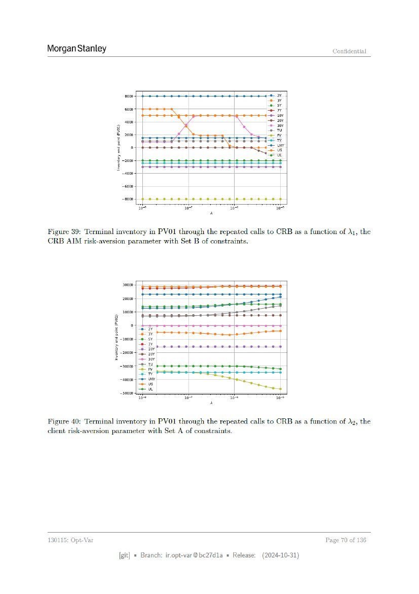
Figure 39: Terminal inventory in PVO1 through the repeated calls to CRB as a function of \1, theCandidate 173 - page 070
Figure 40: Terminal inventory in PVO1 through the repeated calls to CRB as a function of \s, theCandidate 174 - page 071
{kind=link}
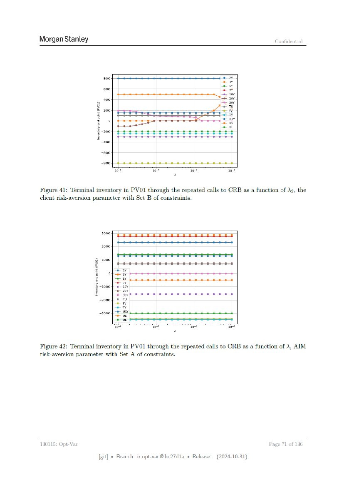
Figure 41: Terminal inventory in PVO1 through the repeated calls to CRB as a function of \s, theCandidate 175 - page 073
{kind=link}
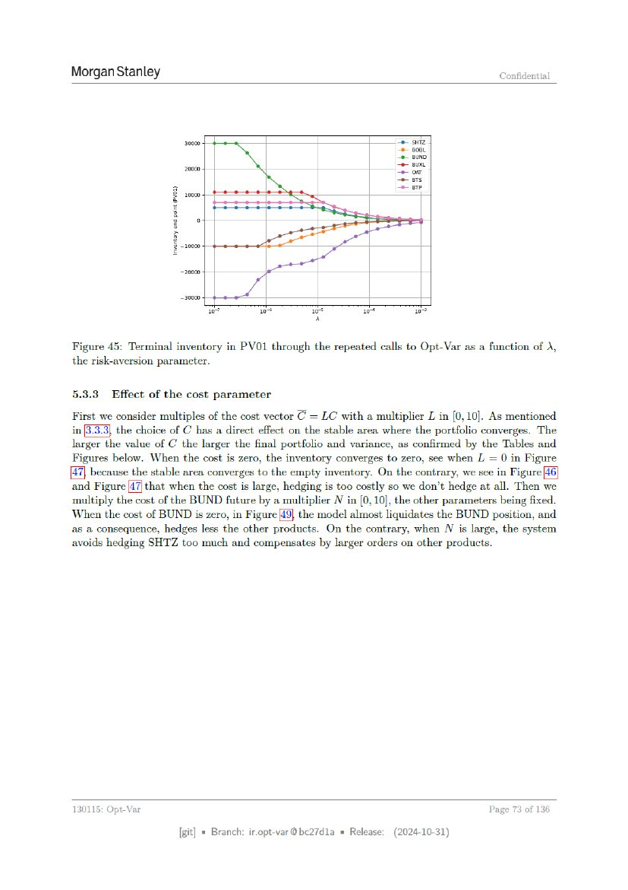
First we consider multiples of the cost vector C = LC with a multiplier L in 0,10]. As mentionedCandidate 176 - page 074
{kind=link}
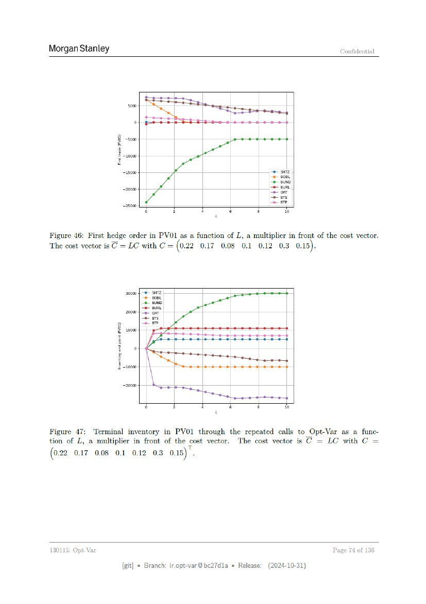
The cost vector is T= LC with C = (0.22 0.17 0.08 0.1 0.12 0.3 0.15).Candidate 177 - page 074
tion of LZ, a multiplier in front of the £cost vector. The cost vector is C = LC with C =Candidate 178 - page 076
{kind=link}
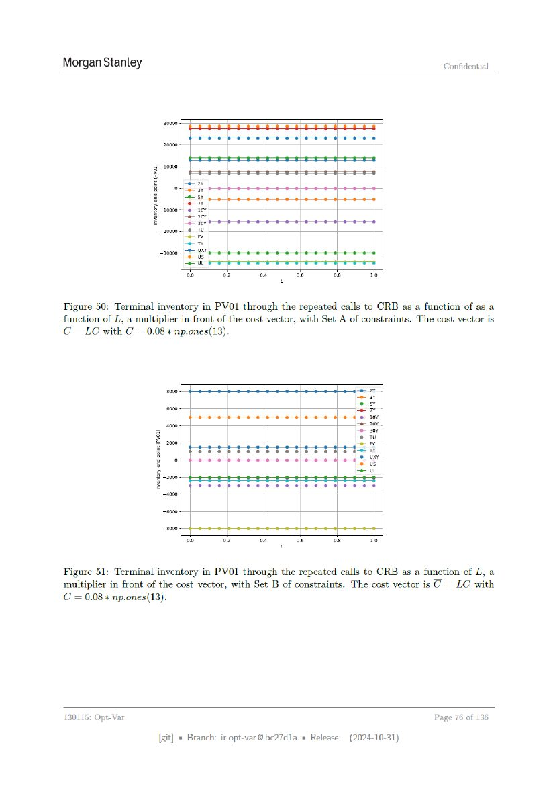
C =LC with C = 0.08 * np.ones(13).Candidate 179 - page 076
multiplier in front of the cost vector, with Set B of constraints. The cost vector is C = LC withCandidate 180 - page 076
C = 0.08 * np.ones(13).Candidate 181 - page 077
{kind=link}
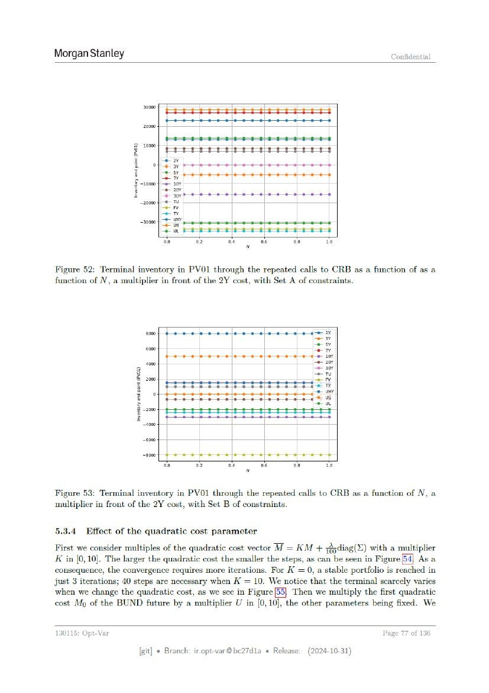
First we consider multiples of the quadratic cost vector M = KM + ;Ajdiag(X) with a multiplierCandidate 182 - page 078
{kind=link}
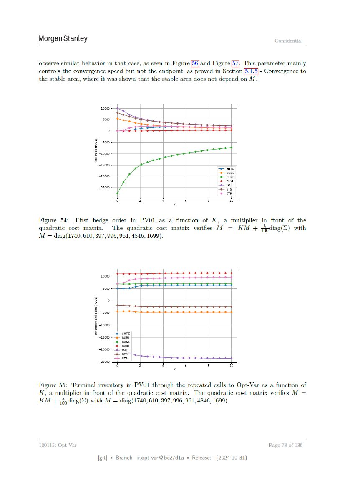
quadratic cost matrix. The quadratic cost matrix verifies M = KM + ;Apdiag(Z) withCandidate 183 - page 078
M = diag(1740, 610, 397, 996, 961, 4846, 1699).Candidate 184 - page 078
KM + 7Apdiag(Z) with M = diag(1740, 610, 397, 996, 961, 4846, 1699).Candidate 185 - page 079
{kind=link}
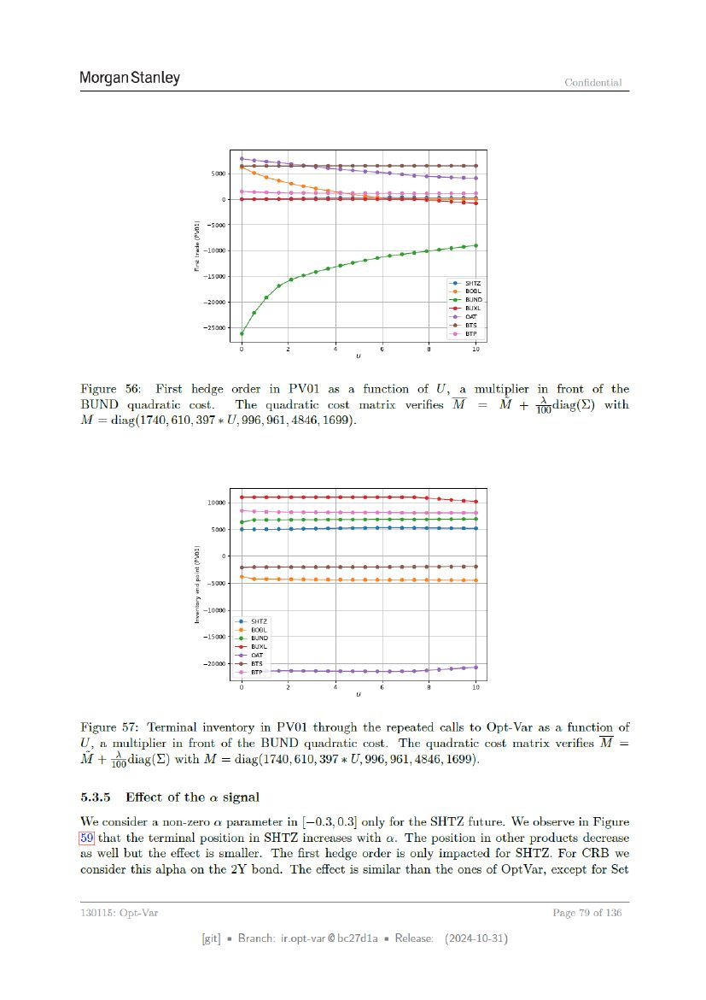
BUND quadratic cost. The quadratic cost matrix verifies M = M + Ajdiag(S) withCandidate 186 - page 079
M = diag(1740, 610, 397 « U, 996, 961, 4846, 1699).Candidate 187 - page 079
U, a multiplier in front of the BUND quadratic cost. The quadratic cost matrix verifies M =Candidate 188 - page 079
M + ppdiag(S) with M = diag(1740, 610, 397 « U, 996, 961, 4846, 1699).Candidate 189 - page 080
{kind=link}
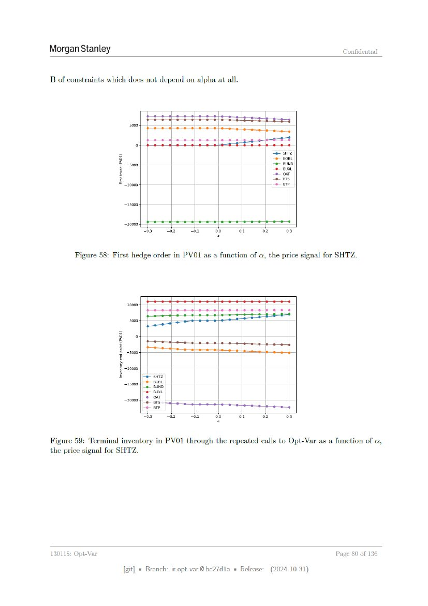
= _ 10000Candidate 190 - page 081
{kind=link}
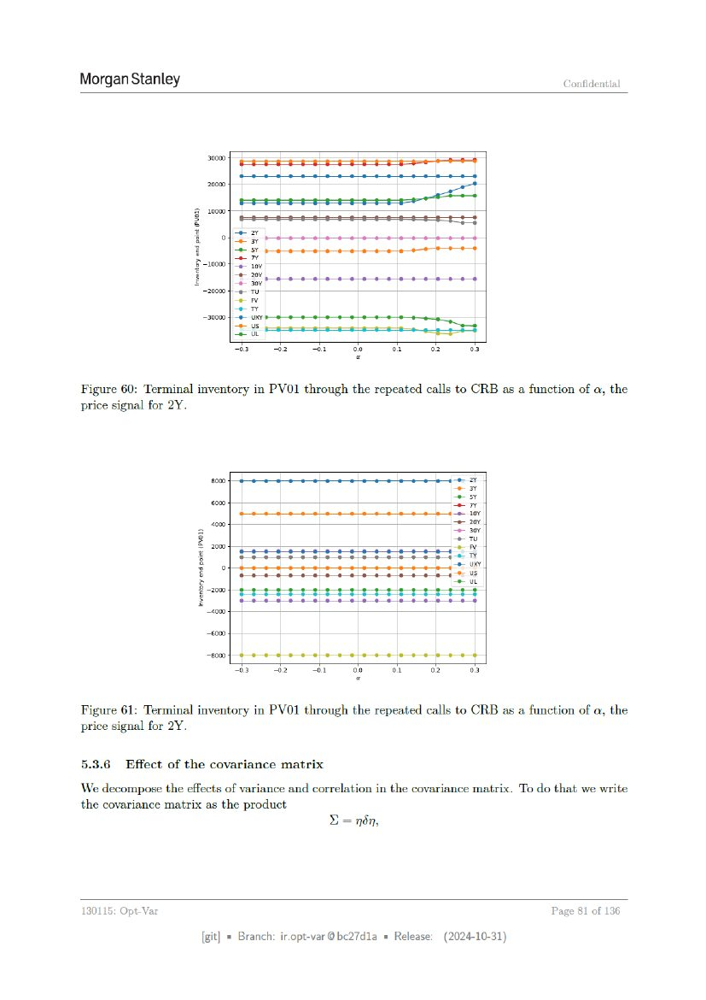
+ usCandidate 191 - page 086
{kind=link}
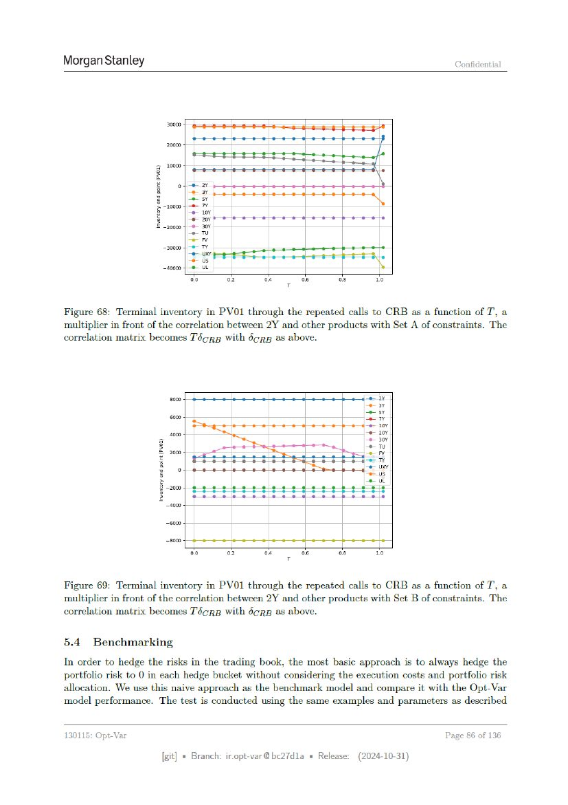
2 5y N\Candidate 192 - page 087
{kind=link}
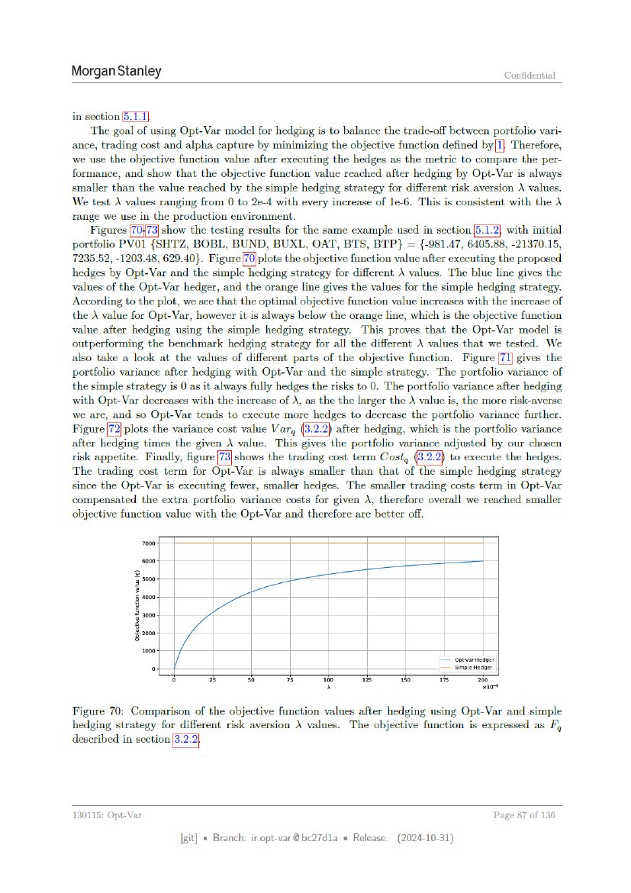
smaller than the value reached by the simple hedging strategy for different risk aversion \ values.Candidate 193 - page 087
We test \ values ranging from 0 to 2e-4 with every increase of le-6. This is consistent with the \Candidate 194 - page 087
hedges by Opt-Var and the simple hedging strategy for different \ values. The blue line gives theCandidate 195 - page 087
outperforming the benchmark hedging strategy for all the different \ values that we tested. WeCandidate 196 - page 087
with Opt-Var decreases with the increase of ), as the the larger the \ value is, the more risk-averseCandidate 197 - page 087
after hedging times the given \ value. This gives the portfolio variance adjusted by our chosenCandidate 198 - page 087
hedging strategy for different risk aversion \ values. The objective function is expressed as F,Candidate 199 - page 088
{kind=link}
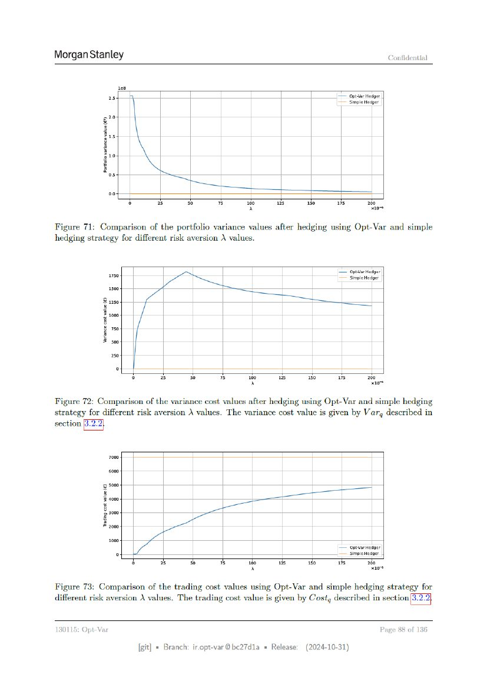
hedging strategy for different risk aversion \ values.Candidate 200 - page 088
strategy for different risk aversion \ values. The variance cost value is given by Vary described inCandidate 201 - page 088
different risk aversion \ values. The trading cost value is given by Costy described in sectionCandidate 202 - page 090

BUND | _ 100 0Candidate 203 - page 090
always smaller than the original portfolio variance for different non-zero \ values. Figure[?4]gives theCandidate 204 - page 090
axis gives the \ values ranging from 1e-6 to 2e-4 with every increase of le-6. The vertical axisCandidate 205 - page 091
{kind=link}
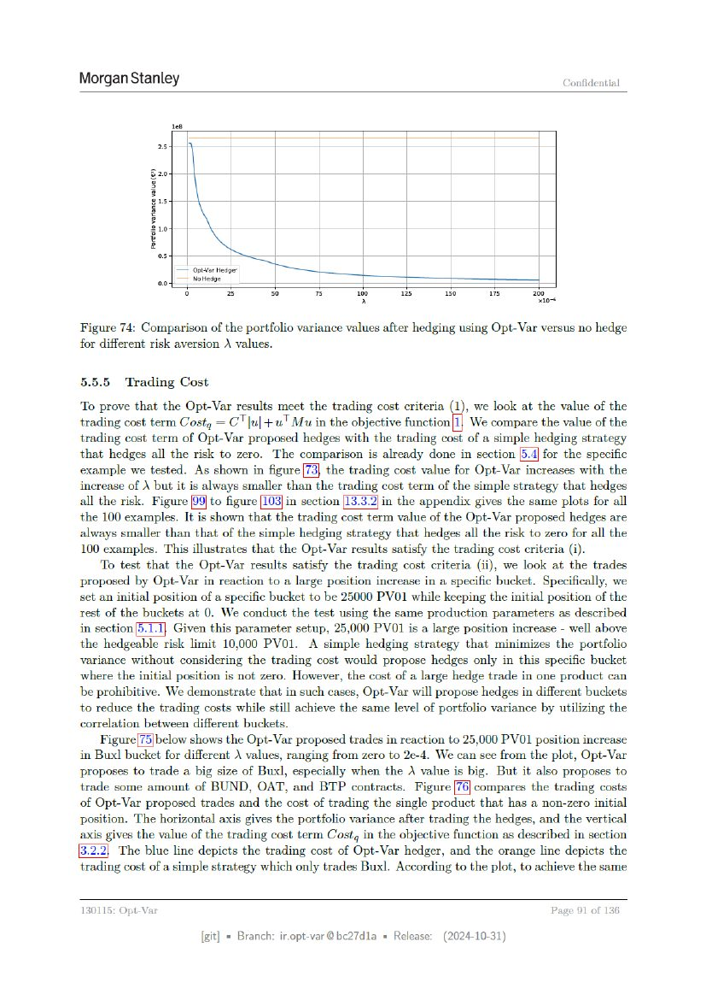
for different risk aversion \ values.Candidate 206 - page 091
trading cost term Costy = C"|u|-+u' Mu in the objective function|I| We compare the value of theCandidate 207 - page 091
in Buxl bucket for different \ values, ranging from zero to 2e-4. We can see from the plot, Opt-VarCandidate 208 - page 092
{kind=link}
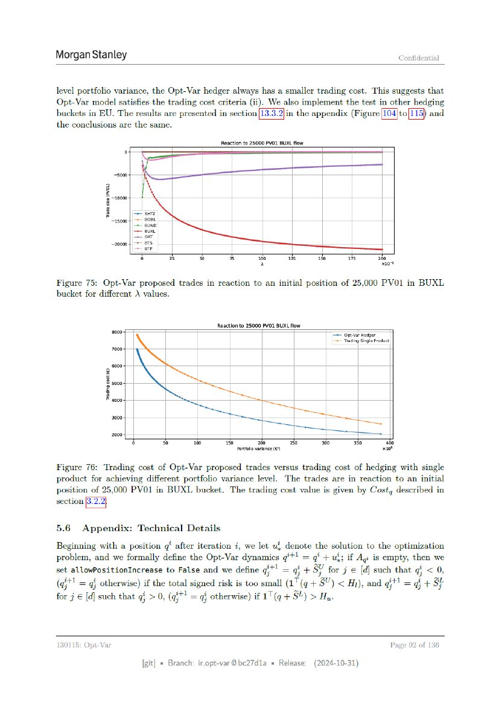
problem, and we formally define the Opt-Var dynamics q'*! = qi + ul; if Ag is empty, then weCandidate 209 - page 093
{kind=link}
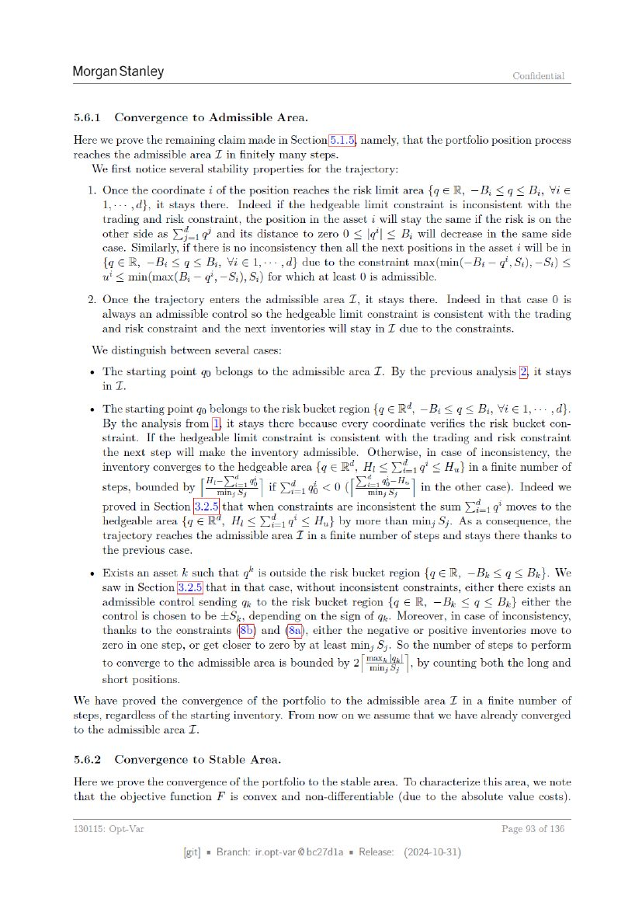
{qe R, -B; <q < Bi, Vie 1,--- ,d} due to the constraint max(min(—B; — q', $;),—S;) <Candidate 210 - page 093
ué < min(max(B; — q', —S;),S;) for which at least 0 is admissible.Candidate 211 - page 093
+ The starting point qo belongs to the admissible area Z. By the previous analysi it staysCandidate 212 - page 093
hedgeable area {q €R%, Hi < 44 q' < Hu} by more than min, $;. As a consequence, theCandidate 213 - page 093
min, S, |; by counting both the long andCandidate 214 - page 094
{kind=link}
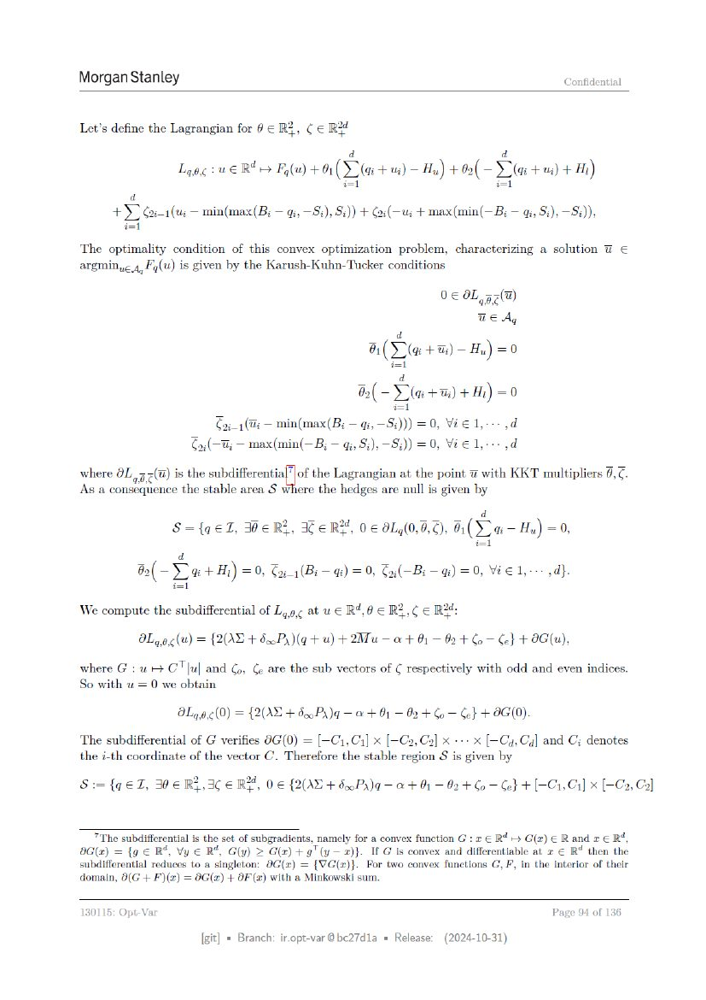
Laog ue RE Fy(u) + a(S +uj)— Hy) + 0( — Sai tui) + cn)Candidate 215 - page 094
+30 Gai-1(ui — min(max(B; — qi, —S1), Si) + Gai(—ui + max(min(—B;— qi, Si), -Si)),Candidate 216 - page 094
Cxi-1Gi — min(max(B;— qi, —Si))) = 0, Vie LedCandidate 217 - page 094
Coi(—% — max(min(—B; — q;,5;),—S;)) =0, Viel, dCandidate 218 - page 094
OL go.¢(u) = {2AE + bo0Py)(q+ uw) + 2M u — a + 61 — 02 + Co — Ge} + OG(u),Candidate 219 - page 094
So with u = 0 we obtainCandidate 220 - page 095
{kind=link}
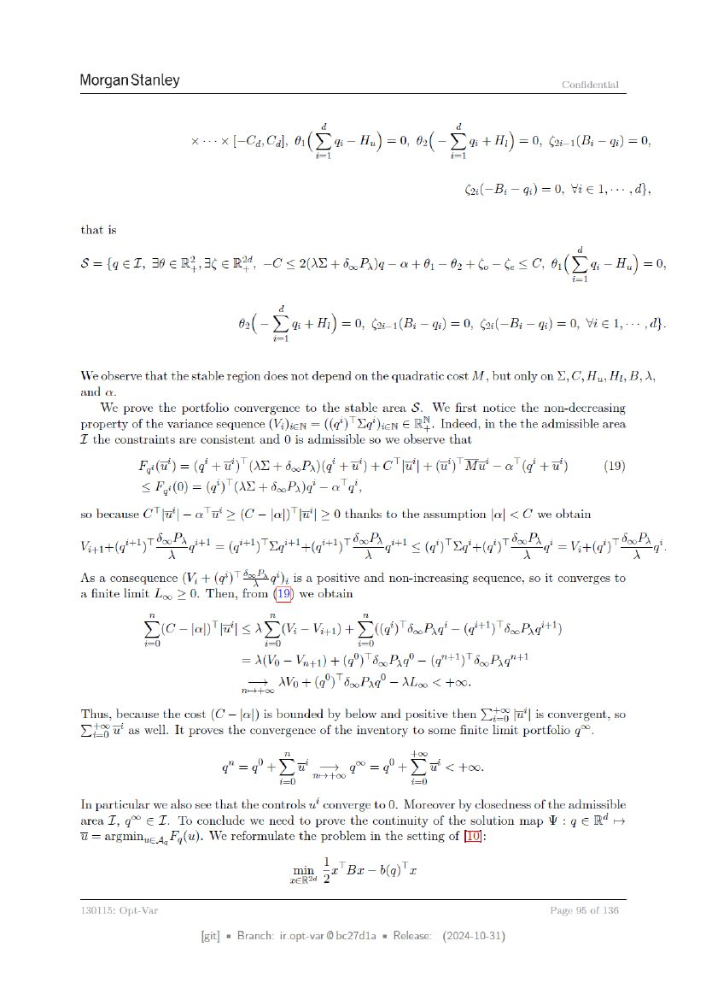
property of the variance sequence (Vi)ien = ((q°) 'Xq')iew € RY. Indeed, in the the admissible areaCandidate 221 - page 095
So0P_§Candidate 222 - page 095
n_ 0 aiCandidate 223 - page 095
noe co _Candidate 224 - page 096
{kind=link}
min(max(B — q,—S),$)Candidate 225 - page 096
—max(min(—B — q, S),—S)Candidate 226 - page 096
client inventory c. First we see that if v € Agyu—u and u € Age then v + u € Aye. We proveCandidate 227 - page 096
min(c,0) < min(¢ — w,0) < ¢f — ul — u) < max(c — w!,0) < max(,0), ¥j €1,--- ,d, VEEL, N,Candidate 228 - page 096
so v +u verifies the bucket risk constraint starting from (q,c). DefineCandidate 229 - page 098
{kind=link}
http: //stashblue.ms. com:11990/atlassian- stash/projects/FIDALGO_MMJ/repos/mmj/browse/fidalgo.Candidate 230 - page 098
(http: //stashblue.ms .com:11990/atlassian- stash/projects/FIDALGO_MMJ/repos/mmj/browse/fidalgo.Candidate 231 - page 098
(http: //stashblue.ms .com:11990/atlassian- stash/projects/FIDALGO_MMJ/repos/mmj/browse/fidalgo.Candidate 232 - page 098
{http://stashblue.ms.com:11990/atlassian- stash/projects/FIDALGO_MMJ/repos/mmj/browse/fidalgo.Candidate 233 - page 098
product. Namely for product é € [d], @, is replaced by max(—0.9 x C,, min(a,,0.9 x C,)).Candidate 234 - page 098
(http://stashblue.ms .com:11990/atlassian- stash/projects/FIDALGO_MMJ/repos/mmj/browse/fidalgo.Candidate 235 - page 098
http: //stashblue.ms. com:11990/atlassian- stash/projects/FIDALGO_MMJ/repos/mmj/browse/fidalgo.Candidate 236 - page 098
http: //stashblue.ms. com:11990/atlassian- stash/projects/FIDALGO_MMJ/repos/mmj/browse/fidalgo.Candidate 237 - page 099
{kind=link}
http: //stashblue.ms. com:11990/atlassian- stash/projects/FIDALGO_MMJ/repos/mmj/browse/fidalgo.Candidate 238 - page 099
inttp: //stashblue. ms. com:11990/atlassian- stash/projects/FIDALGO_MMJ/repos/mmj/browse/fidalgo.Candidate 239 - page 099
« Risk change control /http: //stashblue.ms.com:11990/atlass ian-stash/projects/FIDALGO_|Candidate 240 - page 099
243 and its test http://stashblue .ms.com:11990/atlassian- stash/projects/FIDALGO_MMJ/Candidate 241 - page 099
« Aim not hedging|http://stashblue .ms .com:11990/atlassian- stash/projects/FIDALGO_MMJ/|Candidate 242 - page 099
and its test|ht tp: //s tashblue.ms . com: 11990/at lassian- stash/projects/FIDALGO_MMJ/repos/Candidate 243 - page 101
{kind=link}
\Candidate 244 - page 101
\Candidate 245 - page 101
\Candidate 246 - page 103
{kind=link}
[proj ects/FIDALGO_MMJ/repos/mmj/pull- ]Candidate 247 - page 104
{kind=link}
criteria are the same for CRB. This corresponds to the segment US_CRB.Candidate 248 - page 107
{kind=link}
6 2024-08-30 | Dynamic Lambda content added in relevant section.Candidate 249 - page 107
OJ.L_.2017.087.01.0417.01-ENG)[TCandidate 250 - page 108
{kind=link}
[https://perso.ens-lyon.fr/patrick flandrin /Ledoit Wolf _JMA2004.pdf]23|Candidate 251 - page 116
{kind=link}
hedging strategy for different risk aversion \ values. Examples 1-20.Candidate 252 - page 117
{kind=link}
hedging strategy for different risk aversion \ values. Examples 21-40.Candidate 253 - page 118
{kind=link}
hedging strategy for different risk aversion \ values. Examples 41-60.Candidate 254 - page 119
{kind=link}
hedging strategy for different risk aversion \ values. Examples 61-80.Candidate 255 - page 120
{kind=link}
hedging strategy for different risk aversion \ values. Examples 81-100.Candidate 256 - page 121
{kind=link}
for different risk aversion \ values. Examples 1-20.Candidate 257 - page 122
{kind=link}
for different risk aversion \ values. Examples 21-40.Candidate 258 - page 123
{kind=link}
for different risk aversion \ values. Examples 41-60.Candidate 259 - page 124
{kind=link}
for different risk aversion \ values. Examples 61-80.Candidate 260 - page 127
{kind=link}
different risk aversion \ values. The trading cost value is given by Costg described in section|3.Candidate 261 - page 135
{kind=link}
2 \